Database System Review: Chapter 12-19
My review note before final exam of ZJU Database System, 2022 Spring & Summer.
Chap12: Physical Storage Systems
1. storage
- cache, main memory, (NVM), flash memory, magnetic disk, optical disk, magnetic tapes
- primary/secondary(online)/tertiary(offline) storage
2. Magnetic Disks
- head, tracks( 磁道 ), sectors( 扇区 ), extent( 盘区 )
- Disk controller
- move disk arm
- compute checksum
- Performance
- Access time：Seek time + Rotational latency
- Data-transfer rate
- Sequential/Random access pattern
- IOPS：I/O operations per second
- MTTF：mean time to failure
- Optimization：
- Buffering
- Read-ahead(Prefetch)
- Disk-arm-scheduling
- File organization：fragmented, defragment
- Nonvolatile write buffer(battery backed up RAM or flash)
- Log disk
- Solid State Disks(SSD)：like Flash
- Flash：erase, remapping, flash translation table, wear leveling
Chap13: Data Storage Structures
1. File organization
-
record
-
offset and length field
-
data of fixed-length attributes
-
null bitmap
-
data of variable-length attributes
-
Slotted Page Structure
-
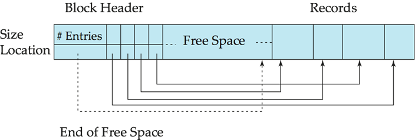
- header：
- number of record entries
- end of free space in the block
- location and size of each record
-
record pointer points to header
-
File organization
-
Heap
- Sequential(ordered by search key)
- multitable clustering file organization：good for join, bad for only one
- Table Patitioning
- B+tree ~
-
Hashing
-
Data Dictionary
- relations
- User and accounting
- Statistical/descriptive data
- Physical file organization info
-
indices
-
Buffer-Replacement Policies
- LRU(least recently used) strategy
- Pinned block
- Toss-immediate strategy
- MRU
- forced output(recovery)
- Column/Row-Oriented Storage(Columnar Representation)
- Benefits:
- only some attributes, Reduced IO, Improved CPU cache
- compression
- Vector processing(modern CPU)
- Drawbacks
- tuple reconstruction
- tuple deletion and update
- decompression
Chap14: Indexing
1. Concepts
- ordered/hash indices
- point/range query
- access/insertion/deletion time
2. Ordered Indices
- primary(clustering)/secondary(non-clustering) index
- Dense/Sparse index
- sparse：less space, less maintenance(insert, delete), slower for locating
- multilevel index：outer sparse, inner primary
3. B+ Tree Index
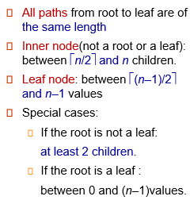
- non-leaf：sparse indices
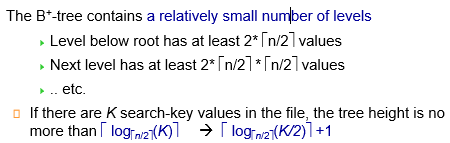
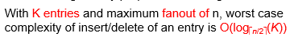
- Non-Unique key
- Extra storage, Simpler code, More I/O, Widely used
- Secondary index：replace record pointer with primary-index search key
- String：variable fanout, space utilization for split, prefix compression
- Composite search keys
4. Write Optimized Indices
- Log-structured merge tree (LSM-tree), Buffer tree
- Stepped-merge index（k trees each level）
- Bloom filter
Chap15: Query Processing
1. Basic Steps
- Parsing and translation：Into relational algebra
- Optimization：choose evaluation plans
- Evaluation
explain \<query>
2. Selection Cost
block transfers and seeks
- linear search
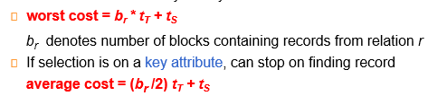
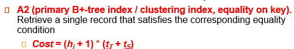
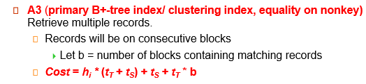
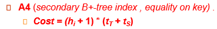
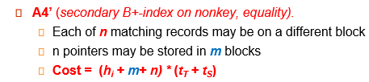
- comparision：
need index - conjunctive selection：one/composite index, intersection of identifiers
- disjunctive selection by union
3. Sorting Cost
- merge sort：simple(\(b_b=1\))->advanced
- runs=\(\lceil b_r/M\rceil\)
- passes=\(\lceil\log_{M-1}(b_r/M)\rceil\)->\(\lceil\log_{\lfloor M/b_b\rfloor-1}(b_r/M)\rceil\)
- block transfers=\(2b_r\lceil\log_{M-1}(b_r/M)\rceil+b_r\)->\(2b_r\lceil\log_{\lfloor M/b_b\rfloor-1}(b_r/M)\rceil+b_r\)
- seeks=\(2\lceil b_r/M\rceil+b_r(2\lceil \log_{M-1}(b_r/M)\rceil-1)\)
- ->\(2\lceil b_r/M\rceil+\lceil b_r/b_b\rceil(2\lceil \log_{\lfloor M/b_b\rfloor-1}(b_r/M)\rceil-1)\)
4. Join Cost
outer relation: r, inner relation: s
- Nested-Loop Join
- block transfer = \(n_r\times b_s+b_r\)
- seeks = \(n_r+b_r\)
- Block Nested-Loop Join：M=2->M
- block transfer = \(b_r\times b_s+b_r\) -> \(\lceil b_r/(M-2)\rceil\times b_s+b_r\)
-
seeks = \(2b_r\) -> \(2\lceil b_r/(M-2)\rceil\)
-
Indexed Nested-Loop Join
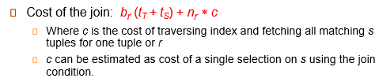
- Merge-Join(Assume already sorted)
- block transfer = \(b_r+b_s\)
- seeks = \(\lceil b_r/x_r\rceil+\lceil b_s/x_s\rceil\)(\(x_r+x_s=M\))
- \(x_r=\frac{M\sqrt{b_r}}{\sqrt{b_r}+\sqrt{b_s}}\), \(x_s=\frac{M\sqrt{b_s}}{\sqrt{b_r}+\sqrt{b_s}}\)
- Hash-Join(for equi-join and natural joins)
- r: probe input, s: build input
- h {0, ..., n}
- n = \(\lceil b_s/M\rceil*f\), f: fudge factor(around 1.2)
- Recursive partitioning: n = M-1
- if \(M>b_s/M+1\)->\(M>\sqrt{b_s}\), needn't recursive partitioning
- block transfer = \(3(b_r+b_s)+4n_h\)(needn't recursive partitioning)
- need: \(2(b_r+b_s)\lceil\log_{M-1}(b_s/M)\rceil+b_r+b_s\)
- seeks = \(2(\lceil b_r/b_b\rceil+\lceil b_s/b_b\rceil)\lceil\log_{M-1}(b_s/M)\rceil\)
5. Evaluation
- Materialization
- double buffering
- Pipelining
- demand driven(lazy, pull)
- open(), next(), close()
- producer-driven(eager, push)
- Query Processing in Memory
- Compilation
- Column-oriented storage(vector)
- Cache conscious algorithm
Chap16: Query Optimization
1. Generating Equivalent Expressions
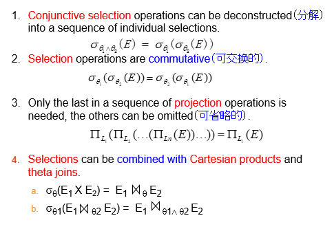
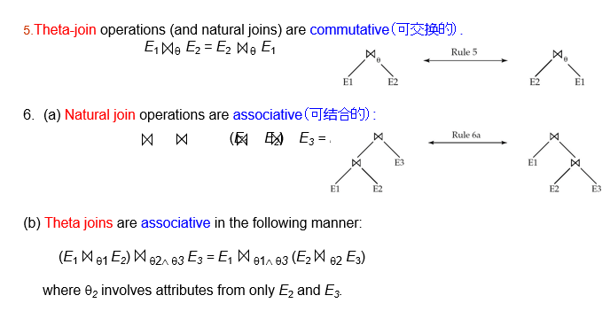
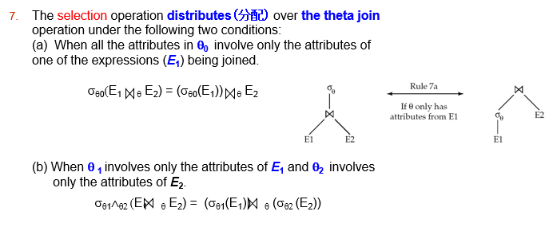
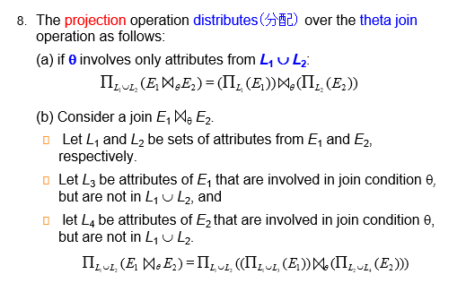
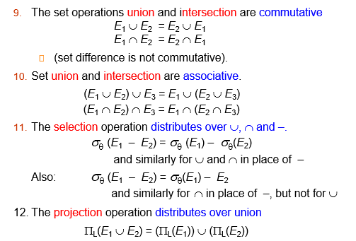
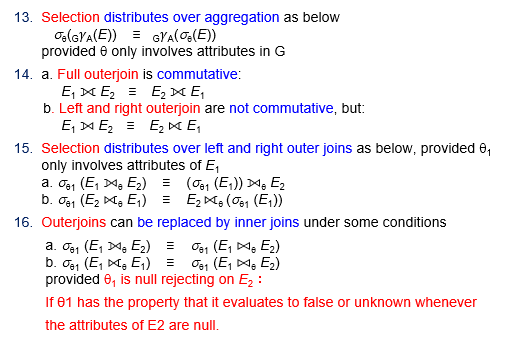
- Performing the selection/projection as early as possible
- Join Order
- Space requirements：sharing common sub-experssions
- Time requirements：Dynamic programming
2. Statistics for Cost Estimation
\(b_r=\lceil n_r/f_r\rceil\)
Selection
满足条件的数量
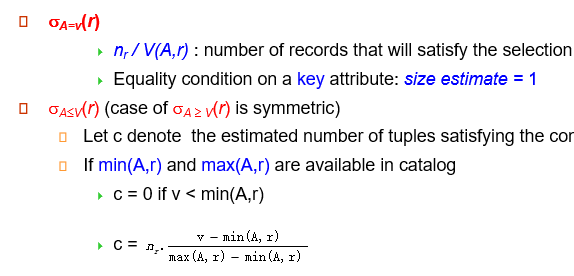
缺信息：\(n_r/2\)
中选率 selectivity=\(s_i/n_r\)
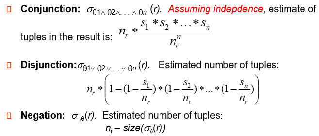
Join
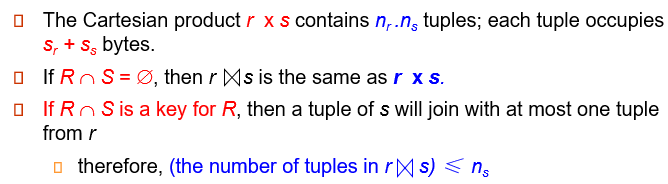
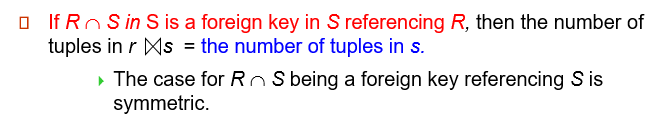
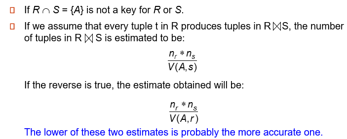
Other
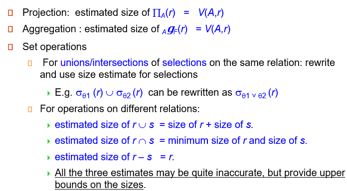
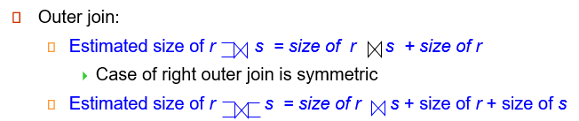
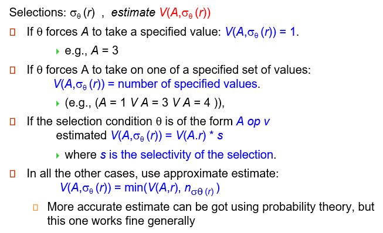
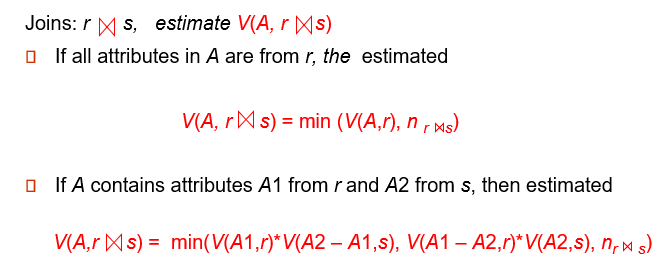
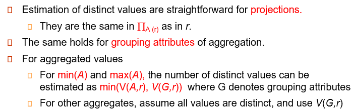
3. Choice of Evaluation Plans
Join-Order
- (2(n-1))!/(n-1)!
- DP, Time O(3^n), Space O(2^n)
- left-deep join tree, Time O(3^n)
Heuristic Optimization
- Perform selection/projection early
- Perform most restrictive selection and join operations
- Perform left-deep join order
4. Optimizing Nested Subqueries
correlation variables/evaluation
Materialized Views
- incremental view maintenance
Chap17: Transactions
1. ACID
Atomicity, Consistency, Isolation, Durability
2. Transaction State
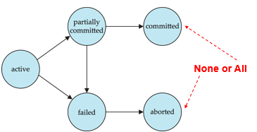
- concurrency advantages
- increased processor and disk utilization
- reduced average response time
- Anomalies in Concurrent Executions
- Lost Update（丢失修改）
- Dirty Read（读脏数据）
- Unrepeatable Read （不可重复读）
- Phantom Problem（幽灵问题 ）
- Serializability
- conflict serializability(冲突可串行化 )
- 冲突操作对顺序相同
- view serializability（视图可串行化）
- 读的东西相同，最终写的东西相同（弱于冲突可串行化）
- Precedence graph（前驱图 ）
- serializability order by topological sorting
- Recoverable schedule：T2 读 T1 所写，则 T1 需在 T2 前 commit
- Cascading/Cascadeless rollback：read committed
- Transaction Isolation Levels
- Serializable
- Repeatable read
- Read committed
- Read uncommitted
Chap18: Concurrency Control
1. Lock-Based Protocols
- concurrency-control manager
- exclusive(X), shared(S)
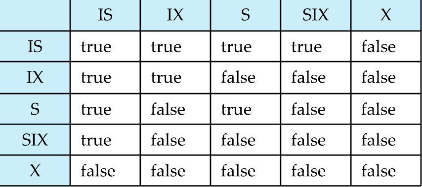
- enforce serializability , 但不能避免 deadlock
-
某事务等待被授予 X 锁，然而有一系列的事务在申请 S 锁，该等待 X 锁的事务迟迟得不到 X 锁，于是被饿死了 (starvation)
-
Growing Phase ( 增长阶段 ), Shrinking Phase( 缩减阶段 )
- basic/strict/rigorous two-phase locking
- Deadlock Handling
- Deadlock prevention：封锁所有数据项，迫使偏序顺序执行
- Timeout-Based Schemes：starvation 仍可能发生，合适 timeout interval 困难
- wait-die scheme — non-preemptive：旧等新
- wound-wait scheme — preemptive：新等旧
2. Graph-Based Protocols
- Tree Protocol
- advantage
- unlock early
- deadlock-free
- pitfall
- not guarantee recoverability
- lock more data items
3. Multiple Granularity
- fine/coarse granularity
- intention-shared (IS)/exclusive(IX):
- shared and intention-exclusive(SIX)
- 过程
- 先锁根
- 锁 S, IS，则父 IX, IS
- 锁 X, SIX, IX，则父 IX, SIX
- 先 unlock 子，再 unlock 父
- 插入，删除加 X 锁；select 加 S 锁
- 并发度低，Index locking protocols 更好
Chap19: Recovery System
0. Outline
- 故障分类 Failure Classification
- 存储结构 Storage Structure
- 数据访问 Data Access
- 恢复与原子性 Recovery and Atomicity
- 基于日志的恢复 Log-Based Recovery
- 远程备份系统 Remote Backup Systems
- 使用提早锁释放和逻辑撤销操作进行恢复 Recovery with Early Lock Release and Logical Undo Operations
- ARIES 恢复算法 ARIES Recovery Algorithm
1. Failure Classification
- 事务故障Transaction failure :
- 逻辑错误Logical errors: 内部错误条件
- 系统错误System errors: deadlock 等
- 系统故障System crash: 电源错误 power failure，软硬件错误 hardware or software failure
- 一旦故障必然停止的假设Fail-stop assumption: 假定非易失性 non-volatile 存储内容不会因系统崩溃而损坏 corrupted
- DBS 完整性检查：防止磁盘数据损坏
- 磁盘错误Disk failure: 磁头崩溃等
- 假设破坏是可检测的 detectable：磁盘驱动器使用校验和 checksums 来检测故障
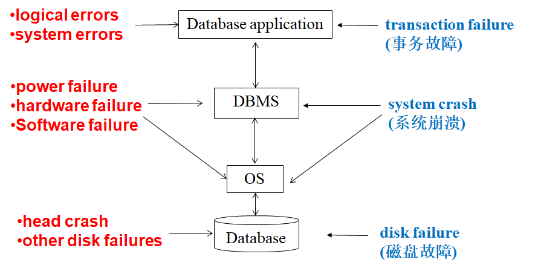
2. Storage Structure
- Volatile storage:
- main memory, cache memory
- Nonvolatile storage:
- disk, tape, flash memory, non-volatile (battery backed up) RAM
- Stable storage:
- 通过在不同的非易失性介质上保持多个拷贝来近似
3. Data Access
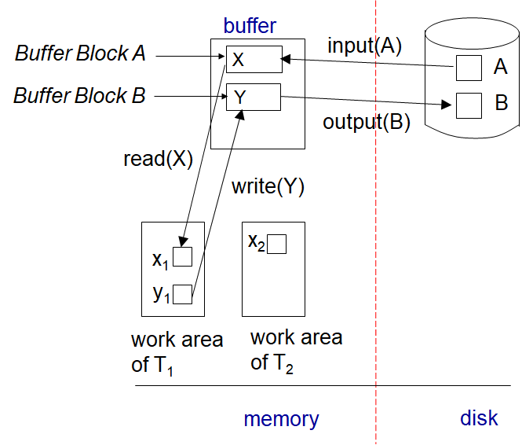
4. Database recovery
- Recovery algorithms：ACID 中的 ACD
- 2 部分：normal transaction processing 中留信息，failure 后 recover
- 假定严格 (strict) 两阶段封锁协议，保证 no dirty read
- 幂等性 Idempotent：再执行同果
5. Log-Based Recovery
log
- log：on SS
- 先写日志原则 WAL(Write-Ahead Logging)
- Log to SS before data to db
concurrency control
- 所有事务共享一个 disk buffer 和一个 log file
- buffer 是 write back、allocate 的
- 严格两阶段封锁协议：commit 或 abort 后的被写数据才能被读 / 写
- 使用 logical undo logging 可以支持提早释放锁 early lock release
Transaction Commit
- transaction commit：commit log 被输出到 SS
- 确保先前的 log 都已经被输出到 SS
- 事务的写项可能仍在 buffer 中
Undo and Redo
- undo：写补偿日志 compensation log；redo 不写日志
- repeating history - undo
Checkpoint
- All logs：main memory->SS
- All modified buffer blocks->disk
- \
->SS, L: active transactions - 停机
Log Record Buffering
- Log 存于 Buffer，当 (1)buffer 满 (2)log force 时写入 SS
- log force：transaction commit 时，将其全部 log 写入 SS
- Group commit：单个输出操作输出多个日志记录，从而降低 I/O 成本。
- 对于 Log Record Buffering，需遵循如下规则：
- 按创建顺序将 log record 输出到 SS
- \<T commit> 先入 SS，T 再进入 commit 状态
- WAL (strictly, only undo information required)
DB buffering
recovery algorithm 可能有以下策略：
- 非强制策略no-force policy：commit 而不入 disk
- 强制策略force policy：commit 必入 disk (expensive commit)
- 窃取策略steal policy：commit 前就入 disk
Fuzzy Checkpointing
- 避免 long interruption 于 checkpointing
- 过程
- 停机
- 写 \<checkpoint L>
- 列脏块
- 停机结束
- 脏块 ->disk（脏块不更新，依旧 WAL）
- 更新 last_checkpoint(on disk)
Dump(recovery of non-volatile storage)
- 类似于 checkpoint，DB to SS
- all log to SS-> all buffer to disk->DB to SS-> 写 \<dump> to SS
- recover from disk failure
- 从最新 dump 恢复，log-based recover
- fuzzy/online dump
6. Recovery with Early Lock Release and Logical Undo Operations
- logical/physical undo logging, logical operations
- redo：physically
- <Ti, Oj, operation-begin>
- <Ti, Oj, operation-end, U>
- operation-end 之前 crash/rollback，则物理 undo；反之，逻辑 undo。
- rollback：<Ti, Oj, operation-abort>.
7. ARIES Recovery Algorithm
Data Structure
- log sequence number(LSN)：in pages
- Page LSN
- Log records(many types)
- Dirty page table
Page LSN
- 最后一条反应于该页的 LSN
- update
- 加 X 锁 (X-latch the page)，写 log
- 写 page
- 更新 PageLSN
- 放锁
- flush：S 锁
- 保证 consistency，可物理 redo
- PageLSN 避免重复 redo，从而保证幂等性 idempotence
Log Record
- PrevLSN：同一事务前一 log 的 LSN
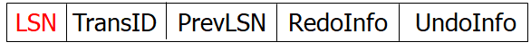
- UndoNextLSN：undo 时的下一 LSN（减少 undo）
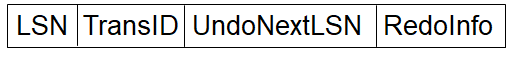
DirtyPageTable
PageLSN, RecLSN
3 passes
- Analysis pass: undo-list, dirty pages, RedoLSN
- start：last complete checkpoint log record
- RedoLSN = min of RecLSN / checkpoint
- Redo pass: RedoLSN, using RecLSN、PageLSNs
- 不在 dirty page table，或 LSN < RecLSN，skip
- 否则，fetch page：pageLSN < LSN, redo
- Undo pass: